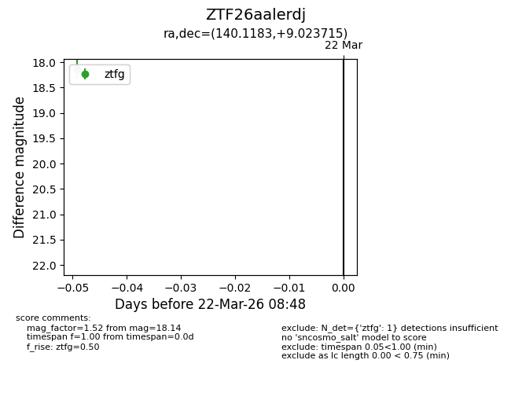
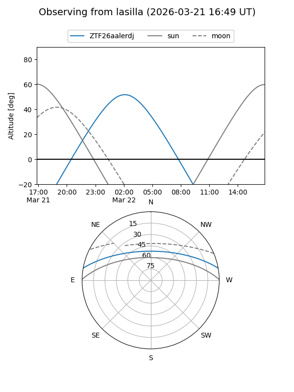
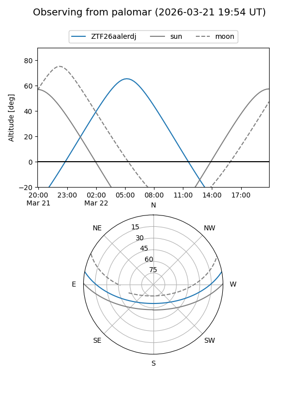

ZTF26aalerdj
Target ZTF26aalerdj at 2026-03-22 08:50
Aliases and brokers:
FINK: link
Lasair: link
ALeRCE: link
alt names
ZTF26aalerdj (ztf,fink_ztf)
Coordinates:
equatorial (ra, dec) = 140.1183,+9.02372
equatorial (HMS+DMS) = 09:20:28.40,+09:01:25.38
galactic (l, b) = (222.5392,+37.13271)
Flags:
Photometry:
last ztfg=18.14
1 ztfg detections
Lightcurve

Visibility


Additional plots